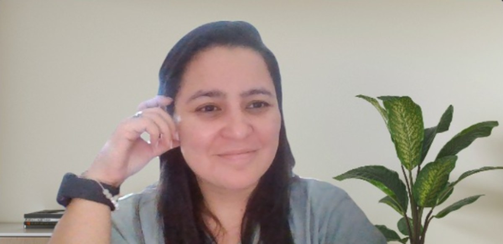
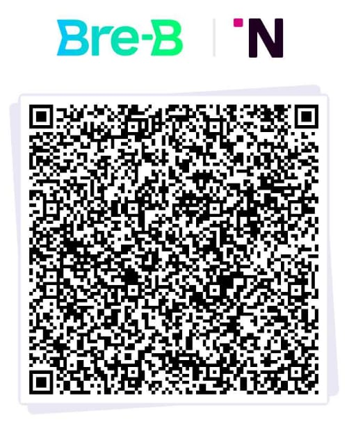
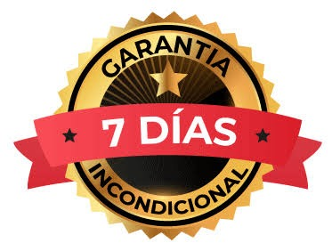
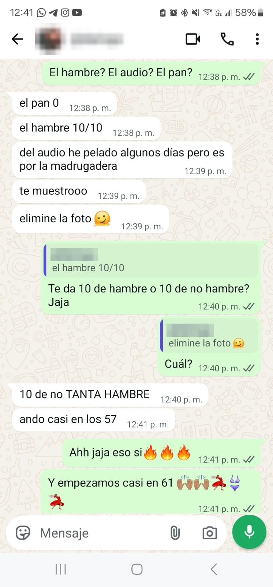

Baja de peso con hipnosis y biodescodificación y deja de vivir de dieta en dieta
Calorías, porciones, macros, comparaciones, el miedo a que te juzguen…
Cuando comer se vuelve una batalla en la cabeza, bajar de peso se siente como una montaña rusa.
Vamos a la raíz emocional e inconsciente de ese caos para que bajar de peso deje de ser una guerra y por fin se sostenga.
- Comer sin aguantar hambre, contar, pesar ni castigarte
- Atender tus emociones sin que la comida sea una forma de apagarlas
- Dejar atrás el efecto rebote
Un proceso amoroso y profundo. Sin promesas mágicas ni rápidas, pero con cambios reales que se quedan contigo.
Videollamada de 20 minutos para conocer el proceso y ver si es para ti. Sin compromiso.
Acompaño solo a 10 mujeres al mes: cada parte del proceso es personalizada y tienes soporte por WhatsApp entre sesiones.
Una banda gástrica virtual para comer menos sin pelear contra el hambre
La misma idea de la cirugía, pero con hipnosis y sin bisturí.
En las sesiones de hipnosis trabajamos para que notes antes cuando ya estás satisfecha y para que un plato más pequeño empiece a ser suficiente. Sin contar, sin pesar, sin vivir con hambre.
Ahora, seamos honestas: llenarte más rápido ayuda, pero no lo resuelve todo. Puedes tener el estómago lleno y, a las 10 de la noche, después de un día pesado, seguir buscando el helado. Eso no es hambre. Y es justo ahí donde este proceso va más lejos.
Si no se trata sólo de comer menos, ¿entonces de qué?
Con hipnosis y biodescodificación trabajamos las emociones que disparan los antojos, las creencias que te tienen saltando de dieta en dieta y lo que, desde la biodescodificación, puede estar haciendo que tu cuerpo se aferre al peso: una necesidad inconsciente de protección, una creencia de escasez que te lleva a reservar para las vacas flacas, un deseo oculto de hacerte grande para ser vista, y otras que vamos a explorar en tu proceso individual.
La banda se ocupa del hambre. El trabajo terapéutico, de todo lo demás.
Y no es solo mi experiencia. Incluso con una banda gástrica física, solo cerca de la mitad de las personas mantiene sus resultados. No porque su efecto mecánico cambie de una persona a otra, sino porque en el peso influyen muchos otros factores, y la banda solo actúa sobre el hambre.
Con los medicamentos pasa algo parecido: en un ensayo clínico con semaglutida, las personas recuperaron en promedio dos tercios del peso perdido durante el año siguiente a dejar el tratamiento.
Buchwald H y cols. Bariatric surgery: a systematic review and meta-analysis. JAMA, 2004; 292(14): 1724–1737. Wilding JPH y cols. Diabetes, Obesity and Metabolism, 2022; 24(8): 1553–1564. Ensayo STEP 1, extensión.
El peso no depende de una sola cosa
Aunque comas bien, en tu peso influyen muchas cosas a la vez. Estas son las principales y así las abordamos en el proceso.
Biológicos y metabólicos
Insulina, tiroides, hormonas del hambre y la saciedad, microbiota, inflamación, masa muscular, genética y epigenética, medicamentos y condiciones médicas.
Estilo de vida y entorno
Calidad del sueño, niveles de estrés, alteraciones del ritmo circadiano y el ambiente en el que vives y comes.
Emocionales e inconscientes
Creencias, emociones, la información de tu inconsciente y algunos hábitos que se repiten aunque no quieras.
No te voy a decir qué ni cuándo comer
Aquí no hay dietas, ni listas de alimentos prohibidos, ni conteo de calorías. El objetivo es una alimentación intuitiva: comer lo suficiente para que tu cuerpo funcione bien, escuchando tus señales de hambre y saciedad.
Con la hipnosis trabajamos los antojos, los hábitos y las creencias que se instalaron en tu inconsciente. Con la biodescodificación exploramos las razones por las que tu inconsciente se aferra a acumular grasa. Por ejemplo, una mujer que vivió abuso en su infancia puede, sin saberlo, sostener un peso que su inconsciente vive como protección frente a otro peligro como ese.
En algún momento esas razones fueron válidas y ayudaron a sobrevivir. Ya es hora de reprogramar las que apliquen para ti.
Cuando entiendes el origen de tu comportamiento, reprogramas la creencia que te lleva a él y decides actuar diferente, aumenta la probabilidad de que los cambios se sostengan en el tiempo.

Del caos a la comprensión para elegir mejor
Cada proceso es distinto, pero estas son las transformaciones en las que trabajamos juntas.
La báscula no es la única medida de progreso
El número cambia de un día para otro, con el músculo, la hidratación, el descanso, la retención de líquidos, contenido intestinal, fluctuación hormonal... Por eso nos enfocamos más en cómo te sientes, cómo te queda la ropa y la tranquilidad con la que te sientas a la mesa.
Cómo funciona el proceso
Entrevista
Nos conocemos, entiendo tu historia y validamos juntas si este proceso es para ti.
Cuatro sesiones de trabajo
Hipnosis y biodescodificación, diseñadas para ti. Cada sesión dura alrededor de una hora. Y escuchas una hipnosis personalizada todos los días.
Sesión extra si la necesitas
No todas la necesitan, pero está incluida por si algún aspecto pide más trabajo.
100% en línea, desde tu casa. Solo necesitas un espacio cómodo y sin interrupciones, durante cada sesión.
Todo lo que incluye tu proceso
- Sesión informativa gratuita de 20 minutos
- De 4 a 5 sesiones individuales en línea de alrededor de una hora
- Audios de hipnosis personalizados para escuchar en casa
- Audios subliminales si algún aspecto está costando más
- Guías de acompañamiento, cuestionario biodescodificación, ayudas visuales y plantilla de registro de hábitos.
- Soporte por WhatsApp para dudas o comentarios, de lunes a viernes de 9:00 a. m. a 2:00 p. m.
Y además, de regalo
Bono 1 · Masterclass regulación del sistema nervioso
Herramientas cortas para volver a la calma cuando la emoción aprieta.
Bono 2 · Guía de gestión emocional
Formas de reconocer, nombrar y atender lo que sientes sin pasar por la comida.
Bono 3 · Diccionario de los conflictos del sobrepeso
Los conflictos que la biodescodificación relaciona con el sobrepeso, explicados de forma simple y fácil de entender.
O su equivalente en tu moneda. Pago seguro con Hotmart, con las cuotas que Hotmart te ofrezca.
Quiero empezar mi procesoPaga 1.200.000 COP por transferencia con llave Bre-B.

Envíame el comprobante por WhatsApp al 305 316 1010 y agendamos tu sesión informativa.
Quedan 4 de 10 cupos.

Tu dinero está protegido
Empieza con tranquilidad: tienes 7 días de garantía.
En esa primera semana tenemos tu sesión informativa y tu entrevista. Me haces todas tus preguntas, conozco tu historia y lo que quieres lograr, y las dos definimos si este proceso es para ti.
Si vemos que no es el acompañamiento adecuado para ti en este momento, te devuelvo el 100% del dinero por el mismo medio con el que pagaste.
Lo que cuentan quienes ya hicieron su proceso

Testimonios reales compartidos con autorización. Cada proceso es único y los resultados varían de una persona a otra.
Este proceso es para ti si…
- Eres una mujer adulta y quieres entender qué hay detrás de tu relación con la comida.
- Sientes que no tienes todo el control con respecto a la alimentación.
- Buscas un cambio que se sostenga, no un resultado rápido.
- Estás dispuesta a mirar hacia adentro y comprometerte con tu proceso.
No es para ti si…
- Buscas bajar muchos kilos en pocas semanas.
- Tienes una condición médica que influye en tu peso, como alteraciones de la tiroides u hormonales, resistencia a la insulina o diabetes. Este proceso no la trata; consulta primero a tu médico.
- Tienes o has tenido un trastorno de la conducta alimentaria y no cuentas con acompañamiento especializado.
- Esperas que alguien más haga el trabajo por ti.
Hola, soy Naty
Soy hipnoterapeuta y terapeuta en biosanación emocional y biodescodificación.
Yo también viví una relación difícil con la comida. Por eso sé lo que vale encontrar la raíz: la emoción y las creencias que nos llevan a actuar de cierta manera frente al plato. Y sobre todo una manera diferente de actuar y relacionarnos con la alimentación.
Hoy sigo trabajando en mí. Estoy haciendo mi propio proceso de hipnosis y lo estoy compartiendo en Instagram, paso a paso. Te dejo aquí mi cuenta por si quieres más información de tu hipnoterapeuta.
Mira mi proceso en InstagramPreguntas frecuentes
¿Cuántos kilos voy a bajar?
No prometo una cifra. El peso depende de muchos factores y la báscula no es la única medida de avance. Lo que trabajamos es la raíz emocional e inconsciente, que es lo que ayuda a sostener los cambios.
¿Me vas a dar una dieta?
No. No hablamos de qué ni cuándo comer. Si necesitas un plan de alimentación, te puedo recomendar una excelente nutricionista.
¿Voy a perder el control durante la hipnosis?
No. Durante la hipnosis estás consciente y relajada, y puedes salir de ese estado cuando quieras.
¿Funciona en línea?
Sí. Solo necesitas buena conexión, audífonos y un espacio tranquilo donde nadie te interrumpa durante la hora de sesión.
¿Y si compro y luego siento que no es lo que estoy buscando?
Si en tus primeros 7 días decides o decidimos entre las dos que este no es el acompañamiento adecuado para ti en este momento, te devuelvo el 100% de tu dinero por el mismo medio con el que pagaste.
¿Puedo pagar en cuotas?
Si compras por Hotmart, puedes usar las opciones de cuotas que ofrezca según tu país y tu medio de pago.
¿Cómo es el seguimiento por WhatsApp?
El WhatsApp es un canal de soporte para cuando tú tengas dudas o quieras comentarme algo, de lunes a viernes de 9:00 a. m. a 2:00 p. m.
¿Hablamos 20 minutos?
En una llamada gratuita te explico cómo funciona el proceso, resolvemos tus dudas y vemos juntas si es para ti. Sin compromiso.
Solo 10 procesos al mes.